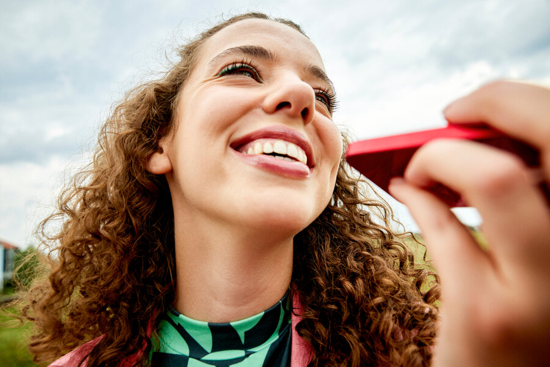

Stijlanalyse
Twee analyses, één style guide
Eigen oog · vóór de AI
- camera net onder ooghoogte
- blur – focus – blur: onscherpe voorgrond
- snapshot-kadrering, niets geposeerd
- 1–2 mensen, nooit figuranten
AI · 23 beelden · $0,04
- 24–35 mm groothoek, dichtbij
- warm daglicht, 4800–5800 K
- voorgrond breekt bewust het kader

origineel
bewolkte lucht
net onder ooghoogte
onscherpe voorgrond
delta
lens · AI wint (24–35 mm)
luchten · wisselend Hollands weer
verzadiging · styling kleurig, grade mid
→ één gemergde style guide